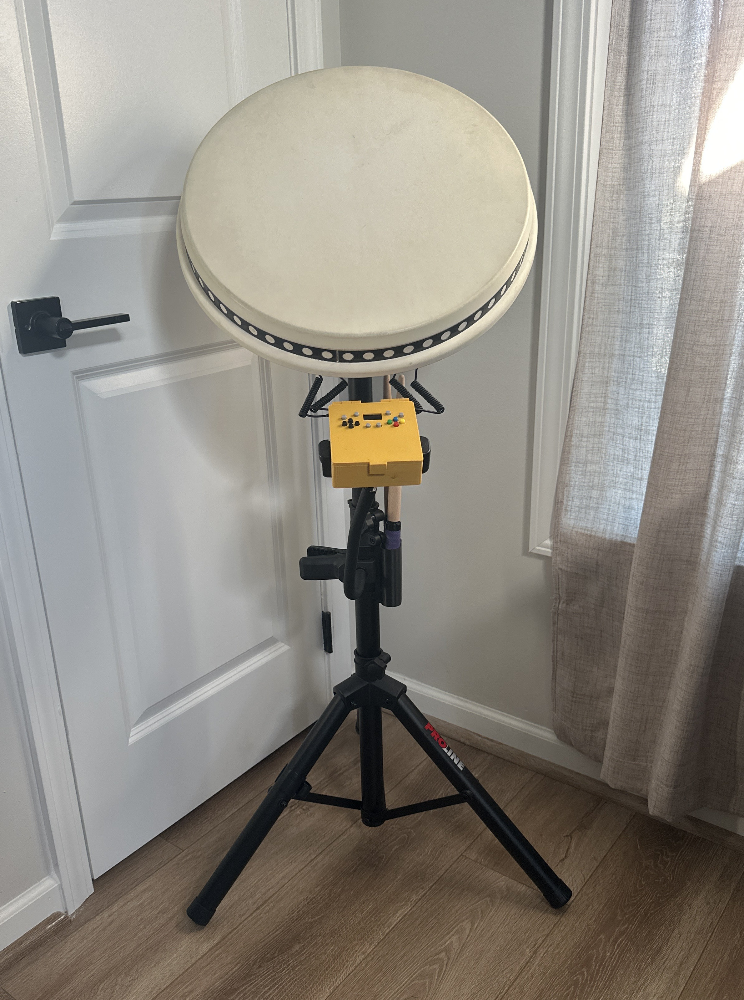
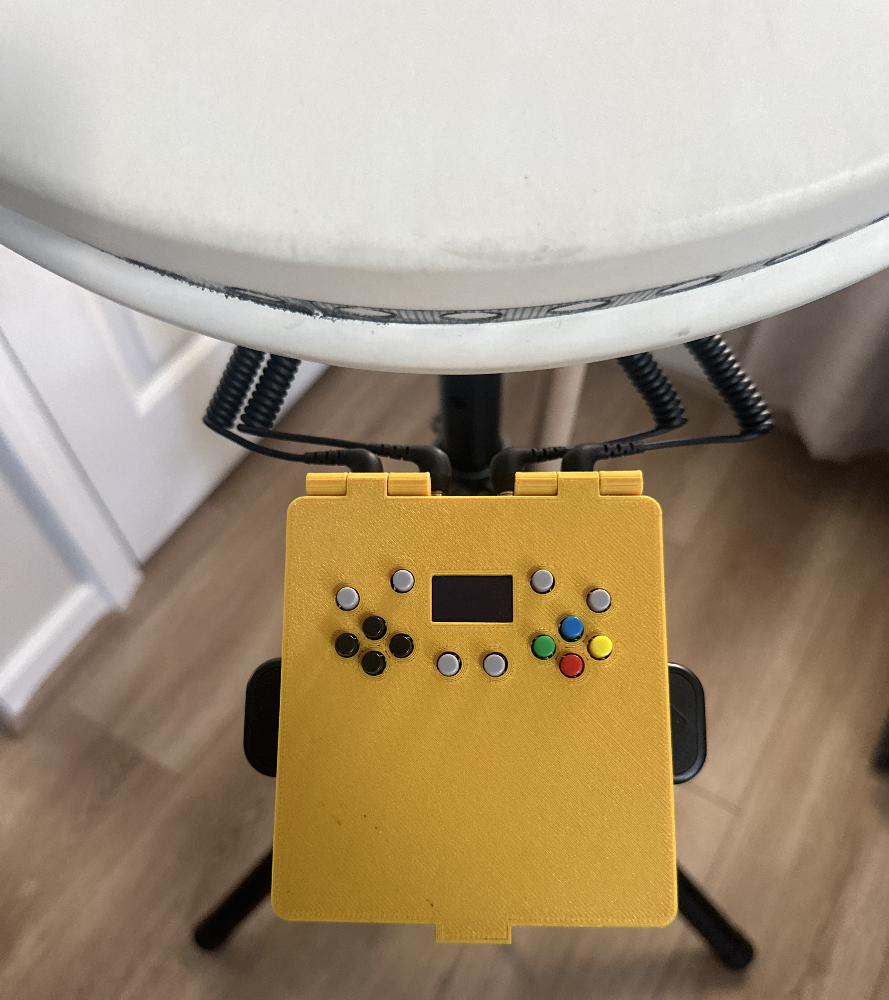
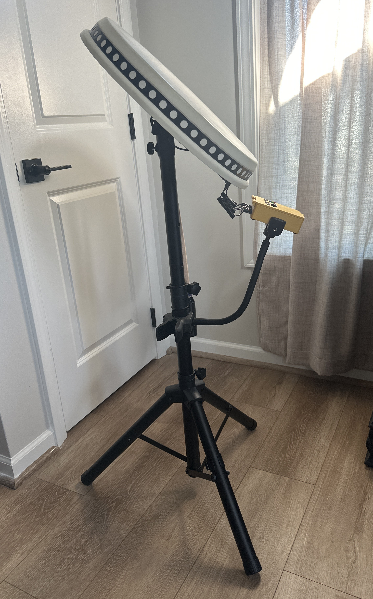

Get Started
Everything you need to build your own arcade-quality Taiko drum controller
Introduction
Hi, I'm KillerQ. Welcome to the OuchiTaiko Project - an open-source build guide for a professional arcade-grade Taiko drum controller.
This guide represents 8 months of research and development, addressing the limited availability and high cost of commercial units. Using Adaptive Baseline Software Intelligence (ABSI), this design achieves arcade-level performance through intelligent software instead of complex analog circuits or custom PCBs.
All you need is basic soldering and woodworking skills. The components linked in this guide work together as tested, though compatible alternatives are welcome.



Key Features
World-First Innovations
Two-Pass Bidirectional Crosstalk Detection
Eliminates ghost hits from frame vibrations using intelligent bidirectional analysis. Zero manual tweaking required for arcade-level accuracy.
Adaptive Baseline Software Intelligence (ABSI)
Automatic sensitivity adjustment based on environmental noise. Velocity-sensing for authentic Big Note scoring. Zero calibration drift over time.
Custom Arcade Sensor Suspension
Precisely mimics Japanese arcade machines for consistent velocity response and accurate Big Note detection.
Complete Hardware & Features
- 4 Velocity-Sensitive Zones with enhanced mechanical and electronic false-trigger isolation
- 14 Game Navigation Buttons for full in-game navigation
- OLED Display with real-time hit feedback and animated drum icons - no PC required for setup
- 14 Input Modes for maximum compatibility (Switch, PS3/PS4, Xbox, PC, MIDI, and more)
- Zero Coding Required - drag-and-drop firmware with on-screen menus
- Professional Mounting via adjustable, angled speaker stand
Everything Included: Circuit diagrams • 3D files • Laser templates • Step-by-step photos • Complete parts list • Professional firmware
Demo Videos
Build Guide
The complete step-by-step build guide with detailed photos is available in the GitHub repository README. The guide covers:
- Parts List (Electronics & Hardware)
- Circuit Board Assembly
- Drum Construction
- Control Box Assembly
- Firmware Installation
- Calibration & Settings
- Troubleshooting
Skill Level: If you can follow instructions and use a soldering iron, you can build this. Zero programming knowledge required.
Downloads
All files are available in the latest release:
- Firmware (UF2 file - drag and drop)
- 3D Printing Files (STL)
- Laser Cutting Templates (SVG)
- Circuit Schematic
- Complete Build Documentation
About & Credits
This project builds upon the excellent foundations of:
- DonCon2040 by ravinrabbid (MIT License) - Core firmware and navigation hardware
- HIDtaiko by kasasiki3 (Apache 2.0) - Circuit inspiration and design
Special thanks to Discord user 'Allspice' for testing and helping shape this guide.
OuchiTaiko adds: Big Note detection, SimulTap mode, PS4 always-on, adaptive baseline tracking, animated display system, enhanced menu navigation, and professional build quality.
Helpful Communities
License
This project is dual-licensed under MIT and Apache 2.0 licenses. Full license information available in the repository.
Ready to Build?
Join the community and start your OuchiTaiko journey today!
View Full Build Guide on GitHub